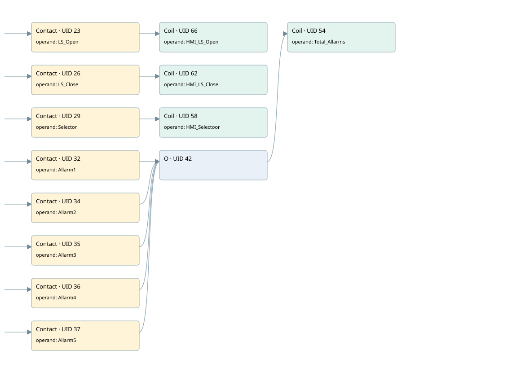

hmi pv_1gate
hmi pv_1gate · 검색 색인 순서 1 · 원본 내부 NID 추정 1
백업 PLF 원본의 2987225 바이트 위치에서 복원한 XML. 검색 문서 341의 객체 키 161022004c17000000000000와 연결했다. 이름 해석 12/12개. 남은 RefId는 상수 또는 미해석 참조다.
연결 구조 다시 그리기
원본 Part/PCon/Wire를 이용한 연결도다. TIA 화면의 래더 배치 또는 실행 결과를 재현한 그림은 아니다. 핀 연결은 아래 표와 원본 XML을 기준으로 읽는다. 노드 위에 마우스를 두면 피연산자 이름을 볼 수 있다.

접점·코일·블록과 피연산자
| Part UID | Gate | Negated 핀 | 연결 피연산자 |
|---|---|---|---|
| 23 | Contact | operand = LS_Open | |
| 66 | Coil | operand = HMI_LS_Open | |
| 26 | Contact | operand = LS_Close | |
| 62 | Coil | operand = HMI_LS_Close | |
| 29 | Contact | operand = Selector | |
| 58 | Coil | operand = HMI_Selectoor | |
| 32 | Contact | operand = Allarm1 | |
| 34 | Contact | operand = Allarm2 | |
| 35 | Contact | operand = Allarm3 | |
| 36 | Contact | operand = Allarm4 | |
| 37 | Contact | operand = Allarm5 | |
| 42 | O | ||
| 54 | Coil | operand = Total_Allarms |
접점 경로를 펼친 조건식
Contact·O/A·비교기의 원본 연결을 읽기 쉽게 펼친 보조 해석이다. POWER는 전원 레일 시작을 뜻한다. 호출 블록·에지·타이머의 내부 동작과 다중 쓰기 순서는 이 표로 실행 검증하지 않았다. 미해석 핀과 RefId는 원문 연결표에서 확인한다.
| UID | 동작 | 대상 | 원본 접점 경로 | 내용 |
|---|---|---|---|---|
| 66 | Coil | HMI_LS_Open | LS_Open | 조건에 따른 Coil 기록 |
| 62 | Coil | HMI_LS_Close | LS_Close | 조건에 따른 Coil 기록 |
| 58 | Coil | HMI_Selectoor | Selector | 조건에 따른 Coil 기록 |
| 54 | Coil | Total_Allarms | (Allarm1 OR Allarm2 OR Allarm3 OR Allarm4 OR Allarm5) | 조건에 따른 Coil 기록 |
원본 배선 연결
| Wire UID | 동일 Wire 연결 끝점 |
|---|---|
| 21 | Powerrail {} ↔ Part 23.in ↔ Part 26.in ↔ Part 29.in ↔ Part 32.in ↔ Part 34.in ↔ Part 35.in ↔ Part 36.in ↔ Part 37.in |
| 22 | ORef 24 (LS_Open) ↔ Part 23.operand |
| 64 | Part 23.out ↔ Part 66.in |
| 65 | ORef 67 (HMI_LS_Open) ↔ Part 66.operand |
| 25 | ORef 27 (LS_Close) ↔ Part 26.operand |
| 60 | Part 26.out ↔ Part 62.in |
| 61 | ORef 63 (HMI_LS_Close) ↔ Part 62.operand |
| 28 | ORef 30 (Selector) ↔ Part 29.operand |
| 56 | Part 29.out ↔ Part 58.in |
| 57 | ORef 59 (HMI_Selectoor) ↔ Part 58.operand |
| 31 | ORef 33 (Allarm1) ↔ Part 32.operand |
| 51 | Part 32.out ↔ Part 42.in1 |
| 43 | ORef 38 (Allarm2) ↔ Part 34.operand |
| 50 | Part 34.out ↔ Part 42.in2 |
| 44 | ORef 39 (Allarm3) ↔ Part 35.operand |
| 49 | Part 35.out ↔ Part 42.in3 |
| 45 | ORef 40 (Allarm4) ↔ Part 36.operand |
| 47 | Part 36.out ↔ Part 42.in4 |
| 46 | ORef 41 (Allarm5) ↔ Part 37.operand |
| 48 | Part 37.out ↔ Part 42.in5 |
| 52 | Part 42.out ↔ Part 54.in |
| 53 | ORef 55 (Total_Allarms) ↔ Part 54.operand |
식별자 해석 근거 12개
| ORef UID | RefId | 이름 | IdentXmlPart 파일 | 해석 방법 |
|---|---|---|---|---|
| 24 | 1 | LS_Open | 0630-IdentXmlPart.xml | UID/RID + search-text + NID agreement |
| 67 | 12 | HMI_LS_Open | 0630-IdentXmlPart.xml | UID/RID + search-text + NID agreement |
| 27 | 2 | LS_Close | 0630-IdentXmlPart.xml | UID/RID + search-text + NID agreement |
| 63 | 11 | HMI_LS_Close | 0630-IdentXmlPart.xml | UID/RID + search-text + NID agreement |
| 30 | 3 | Selector | 0630-IdentXmlPart.xml | UID/RID + search-text + NID agreement |
| 59 | 10 | HMI_Selectoor | 0630-IdentXmlPart.xml | UID/RID + search-text + NID agreement |
| 33 | 4 | Allarm1 | 0630-IdentXmlPart.xml | UID/RID + search-text + NID agreement |
| 38 | 5 | Allarm2 | 0630-IdentXmlPart.xml | UID/RID + search-text + NID agreement |
| 39 | 6 | Allarm3 | 0630-IdentXmlPart.xml | UID/RID + search-text + NID agreement |
| 40 | 7 | Allarm4 | 0630-IdentXmlPart.xml | UID/RID + search-text + NID agreement |
| 41 | 8 | Allarm5 | 0630-IdentXmlPart.xml | UID/RID + search-text + NID agreement |
| 55 | 9 | Total_Allarms | 0630-IdentXmlPart.xml | UID/RID + search-text + NID agreement |
검색 코드 보조 자료
참조 명칭을 찾기 위한 자료이며 실행 순서나 AND/OR 관계는 위 연결표로 확인한다.
#ls_open #hmi_ls_open #ls_close #hmi_ls_close #selector #hmi_selectoor #allarm1 #total_allarms #allarm2 #allarm3 #allarm4 #allarm5